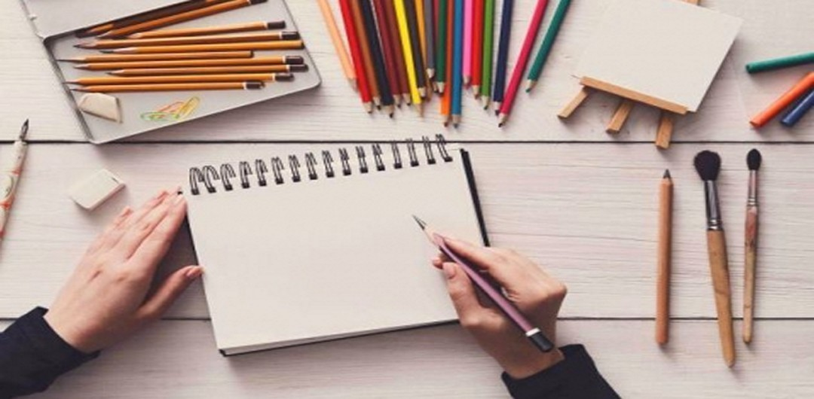
Материалы для рисования неожиданно проявляют себя в создании уникальных картин в зависимости от фантазии и вдохновения художника. Решив представить вам наиболее популярные, я понял, что одной страницы на нашем сайте будет недостаточно, чтобы рассказать обо всех, поэтому продолжение обязательно последует. Оставайтесь с нами, я всегда вам рад!
Материалы, необходимые для начала рисования, просты: инструмент, с помощью которого можно сделать метку, и бумажная поверхность, где её создаём. Карандаши и бумага являются исходным средством для большинства людей. По мере того, как вы растёте как художник, то скоро наверняка обнаружите, что хотите опробовать различные методы и новые материалы. Несмотря на многочисленные технологические достижения, инструменты для создания картин мало изменились за прошедшие столетия. В настоящее время большинство из них стало проще в использовании, и существует более широкий спектр доступных пигментов, но по существу, способ их использования остаётся практически неизменным.
К счастью, немало сопутствующих продуктов являются относительно недорогими и способны производить много рисунков прежде, чем их нужно будет заменить. Рекомендуется, чтобы избежать ненужных расходов и разочарований, сначала покупать умеренно. Начните с самых необходимых, и постепенно переходите к другим, поскольку вы почувствуете потребность расширить диапазон и обновить свой подход.
Графитовый карандаш
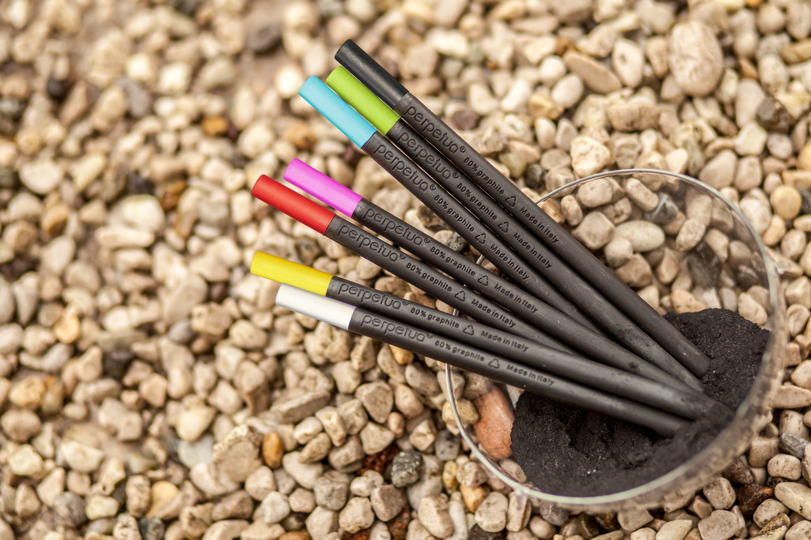
Свинцовый карандаш знаком каждому, однако, он сделан не из свинца, а из графита. Графитовые карандаши лучше всего точить с помощью острого ножа, но не точилки для карандашей. Они классифицируются от жесткого (H) до мягкого (B). Каждый класс карандаша будет только производить тон затенения, и никакое усиленное давление не сделает его темнее. Если вам требуется почти чёрный тон, тогда нужно будет переключиться на более мягкий класс карандаша. Они дадут больший диапазон оттенков, в отличие от жёстких, и могут быть стёрты, не оставляя следа, если вы сделаете ошибку. Именно по этой причине большинство рисунков созданы с помощью карандаша, который имеет класс HB или мягче. Используйте 2B или 3B для начала рисования и переключитесь на более мягкий или более чёрный, такой как 6B или 9B, для глубоких тонов. Большинство механических карандашей хороши для точной работы, но самые мягкие сорта найти нелегко.
Пастельные карандаши
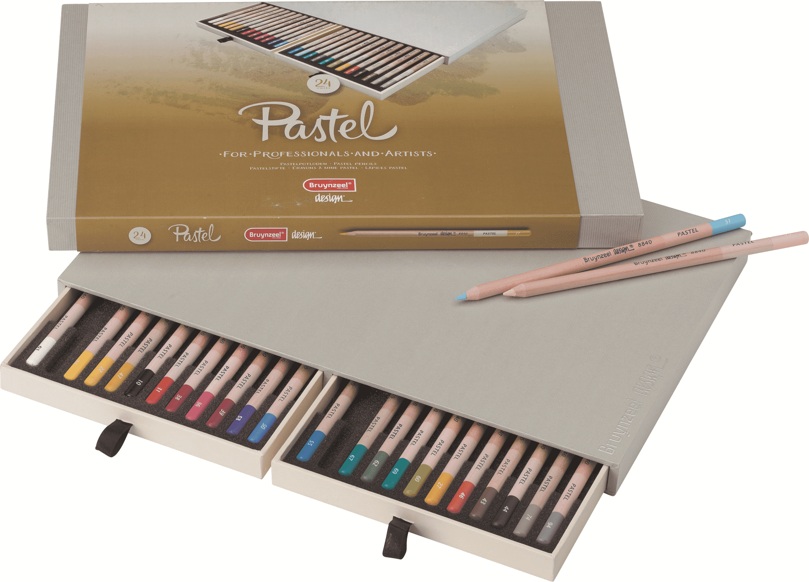
Изготавливаются из полосы твёрдой пастели, закреплённой в деревянной бочке. Избегайте их падения, так как мягкая пигментная полоска легко ломается. Эти карандаши твёрже, чем мягкие, и выглядят как цветные, хотя они имеют более царапающий, меловой вид. Хороши для детальной работы линий, а также затенения, так как они не восковые и могут быть свободно смешаны. Метка, сделанная пастельным карандашом, не является постоянной и должна быть опрыскана фиксатором. Существует большое разнообразие доступных цветов. Они отлично подходят не только для готовых рисунков, но и для быстрых набросков, и особенно эффективны при использовании на цветной бумаге.
Цветной карандаш
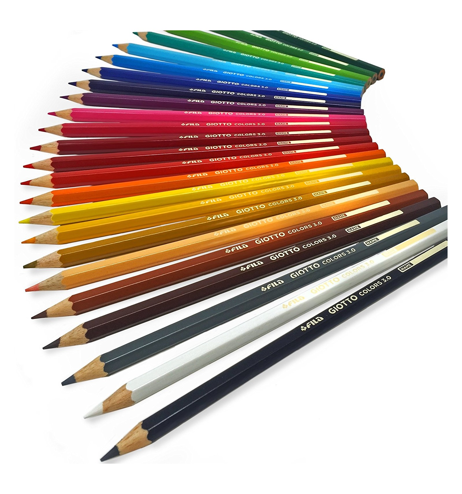
Цветные карандаши изготавливаются во многом так же, как и графитовые. Пигмент смешивают с глиняным наполнителем и связующим веществом. Воск добавляется в качестве смазки и помогает карандашу плавно скользить по бумаге. Они доступны во многих различных цветах и формах, таких как стандартные, водорастворимые, а также толстые и тонкие свинцовые, и отличаются качеством и мягкостью. В сравнении с пастельными, цветные карандаши не нужно распылять с фиксатором. Некоторые из них делают резкие, определённые линии, в то время как другие являются более мягкими и могут быть смешаны сравнительно легко. Многослойные цвета будут давать разные оттенки, и неожиданных результатов можно достичь, используя одну и ту же цветовую группу в разных последовательностях, поэтому стоит поэкспериментировать, чтобы выяснить лучший порядок для конкретного тона.
Конте палочки, мелки и карандаши
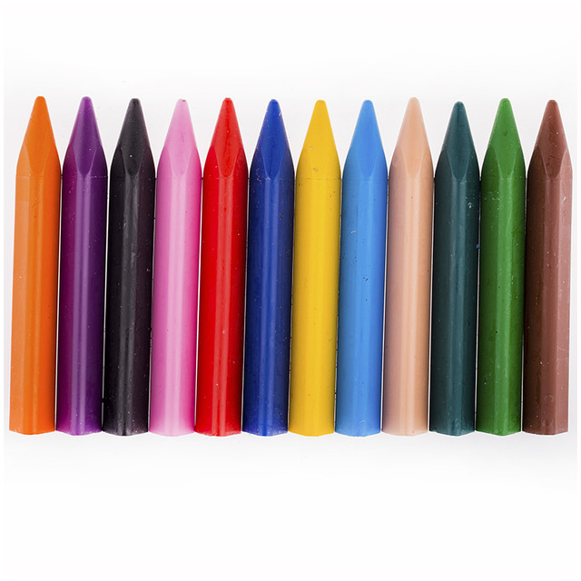
Конте палочки, мелки и карандаши являются натуральными пигментами, связанными с гуммиарабиком. Палочки Конте (также известные как палочки Карре) и твёрдые мелки, или пастели, идеально подходят для создания цветных эскизов. Наиболее популярными цветами являются землистые тона: белый, чёрный, серый, коричневый и цвета ржавчины, такие как sanguine (красновато—коричневый) и сепия, но также доступны в широком диапазоне другой цветовой гаммы. Они особенно хорошо работают на цветной бумаге и могут быть использованы с другими сухими средствами рисования. Если карандаши более пригодны для работы на линии, палочки можно использовать для блокирования в наиболее крупных областях тона. Их не сложно смазать и смешать, но не так легко стереть.
Широкий ассортимент карандашей conté доступен в традиционных расцветках черного, белого, сепии, сангвинара, терракоты и бистра (серовато-коричневого). Карандаши художников напоминают традиционные графитовые, но также доступны с прямоугольным профилем. Некоторые из них имеют содержание воска, что позволяет использовать их без фиксации, когда как другие, меловые, потребуют фиксационной защиты.
Угольные палочки и карандаши
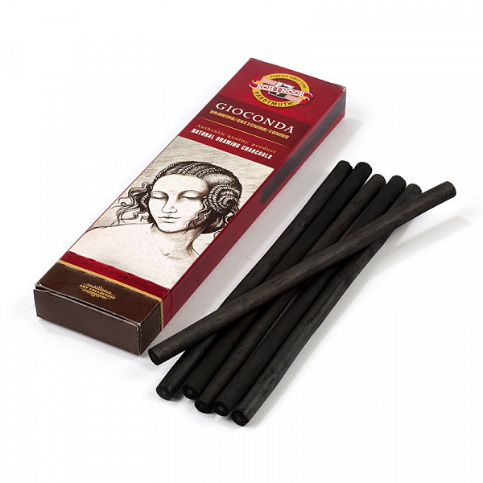
Это по существу обуглившаяся древесина и один из самых старых чертёжных материалов. Изготовленные из карбонизированной древесины (обычно ивы, но также можно найти бук и виноград), палочки классифицируются как мягкие или твёрдые и бывают четырёх толщин: тонкие, средние, толстые и очень толстые. (Последние также известны как уголь художников сцены). Тонкие палочки хорошо работают для меха, перьев и других мелких деталей, в то время как блок-уголь удобен для больших площадей.
Обжатый уголь, или по-другому, сибирский, делают в карандаше С или в виде деревянных, либо свернутых бумажных бочонков. Он более чист для использования, рассортирован по твёрдости и плотности, и может быть представлен как с круглыми, так и с квадратными профилями. Они производят тёмные, достаточно острые линии, которые трудно смазать или смешать. Заточите весь уголь с помощью острого хозяйственного ножа или мелкой наждачной бумаги. Угольная пыль сидит деликатно на опорной поверхности, и будет нуждаться в фиксации, чтобы избежать размазывания.
Графитовые палочки
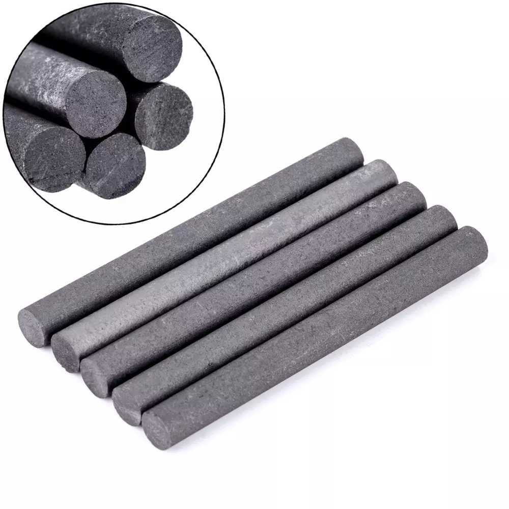
Графитовые палочки являются популярной альтернативой традиционным карандашам. Они не имеют деревянного корпуса, найденного в карандашах, и в основном являются более толстой версией графитовой полосы. Имеющееся в типах HB, 3B, 6B, и 9B, они представляют преимущества над традиционным деревянным карандашом. Форма бочонка круглая с тонким слоем пластиковой краски, извлекаемой по мере использования ручки, при этом пальцы оставляет чистыми. Форма палочки означает, что по мере заточки всегда обнажается большая площадь графита. Это позволяет создавать не только тонкие линии, но и широкие области плоского тона. Как и карандаши, они хороши для рисования и смешивания.
Более короткие, толстые, шестиугольные ручки также доступны в подобном ряде рангов, как небольшие прямоугольные блоки. Оба типа палочек лучше всего затачивать с помощью точилки для карандашей или мелкой наждачной бумагой. Полученный порошок легко втирать в чертежи для создания участков тонировки. Большее количество пыли можно приобрести в художественных магазинах. Как и в случае с традиционными карандашами, бочки, работающие с механизмом сцепления, могут создавать толстые, мягкие графитовые полосы.
Сангина
Сангина — мягкий материал, как правило, красно-коричневого цвета.
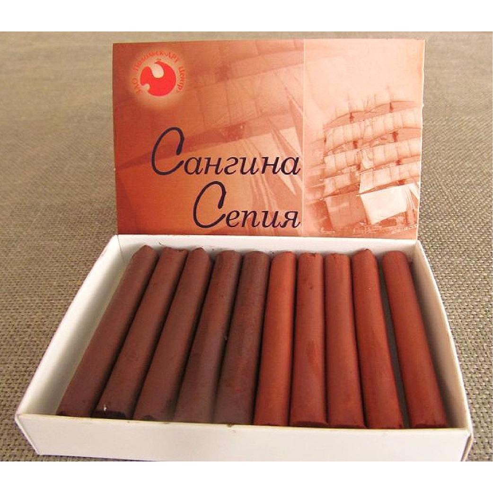
Техника рисунка с помощью сангины известна начиная с эпохи Возрождения. Её использовали Леонардо да Винчи, Рафаэль. Значительная часть этюдов для росписи Сикстинской капеллы великого Микеланджело выполнена сангиной. С помощью сангины хорошо передаются тона обнажённого человеческого тела. Сангину можно растирать по бумаге для получения тонких и полупрозрачных тональных слоёв: валёров. Для этого используют щетинные кисти, специальные растушки или тампоны (в старину их делали из кожи). Сангину можно смачивать водой, втирая её в бумагу. При рисовании штрихом сангина даёт тёмный красновато-коричневый тон. Именно так сангину использовали Микеланджело, П. П. Рубенс, Ж.-Б. Грёз. Техника растушёвки придаёт сангине более яркие и светлые тона: от красновато-оранжевых до желтоватых и розовых.
В эпоху маньеризма и барокко венецианской и римской школ рисование сангиной приобрело наибольшее распространение, поскольку этот материал раскрывал возможности живописного рисования: сочного, красочного штриха в сочетании с приёмами растушёвки, плавными переходами тона, разнообразием фактур. Для сравнения: флорентийцы предпочитали твёрдый грифель, серебряный штифт, тонкий штрих и чёткий контур для достижения осязательной ценности формы[2]. В XVIII веке для эскизов живописных картин и в портретных зарисовках с натуры сангину использовали А. Ватто, Ж. О. Фрагонар, Ж.-Б. С. Шарден. Особенно востребованной в эпоху рококо и неоклассицизма оказалась «техника трёх карандашей»: сочетание в одном рисунке чёрного мела, или итальянского карандаша, белого мела и красной сангины.
Интерес к сангине сохранялся и в последующее время. Но особенно часто к ней обращались художники портретного жанра начала XX века. Приёмы растушёвки сангиной позволяли тонко моделировать лицо и руки портретируемого, оставляя в наброске (часто графитным или угольным карандашом) остальные части фигуры. Известны портретные зарисовки такого рода работы художников объединений «Мир искусства»: К. А. Сомова, М. В. Добужинского, «Цеха живописцев Святого Луки»: Д. Н. Кардовского, Н. Э. Радлова, В. И. Шухаева, А. Е. Яковлева.
Сангину, содержащую сульфит железа, используют для приготовления пигментов масляных красок в живописи и обжигающихся пигментов для росписи изделий из керамики и стёкол витражей.
Тушь
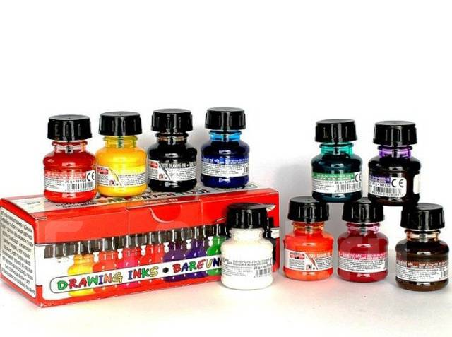
Работа с тушью требует точности, аккуратности и уверенности в рисунке. Так как тушь не смывается и не стирается, исправить рисунок, выполненный этим материалом, практически невозможно.
Однотонная акварель (монохромная монотипия)
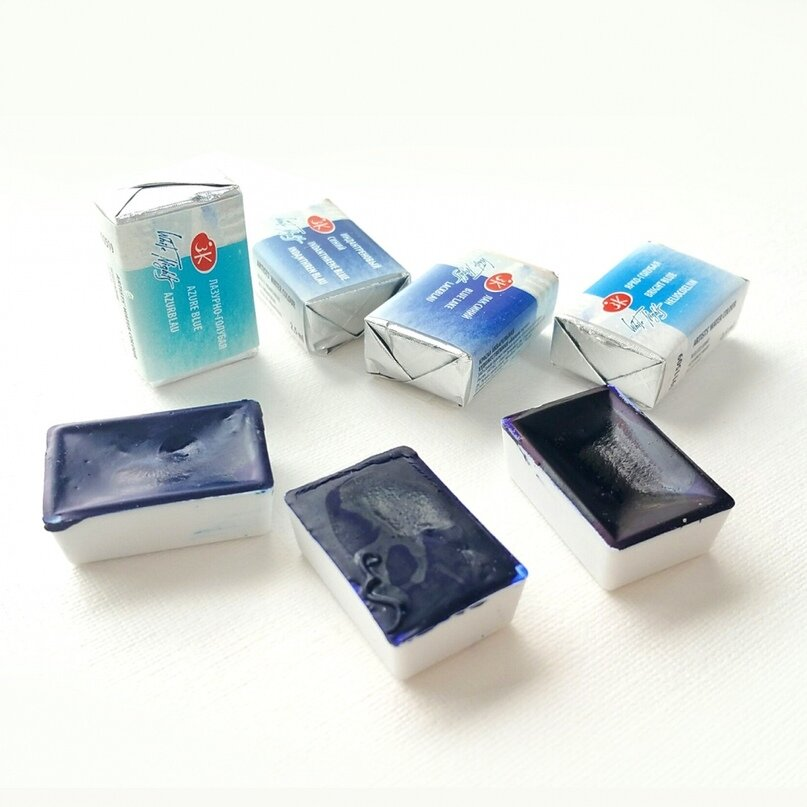
Задача этого материала отнюдь не передача цветового многообразия, а наоборот, художник с помощью однотонной акварели может передать форму, объем, характер предмета.
Кисти
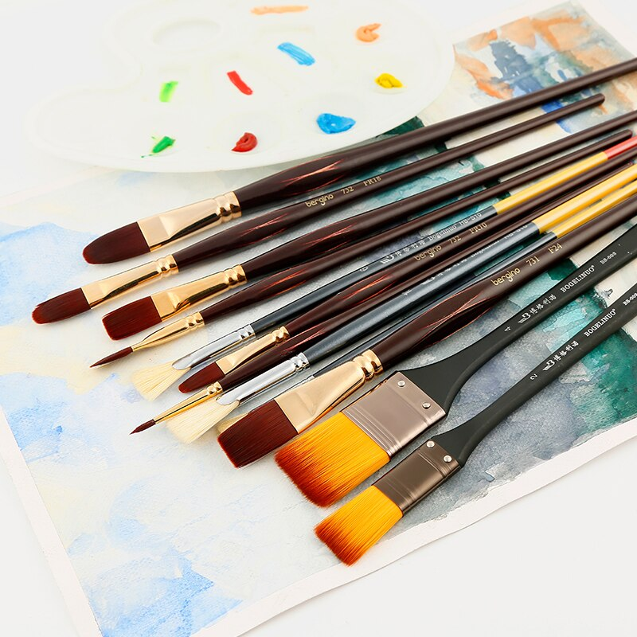
Опытные художники не перестают повторять, что правильно подобранные инструменты для рисования обеспечивают половину работы. Для получения высокого качества необходимо уметь выбирать функциональные кисти.
Хорошую картину подручными средствами не нарисуешь, и с этим утверждением может согласиться каждый. Именно кисти для живописца являются самым главным и значимым инструментом.
Краски
Есть очень много разных красок и прокаждую краску я расскажу
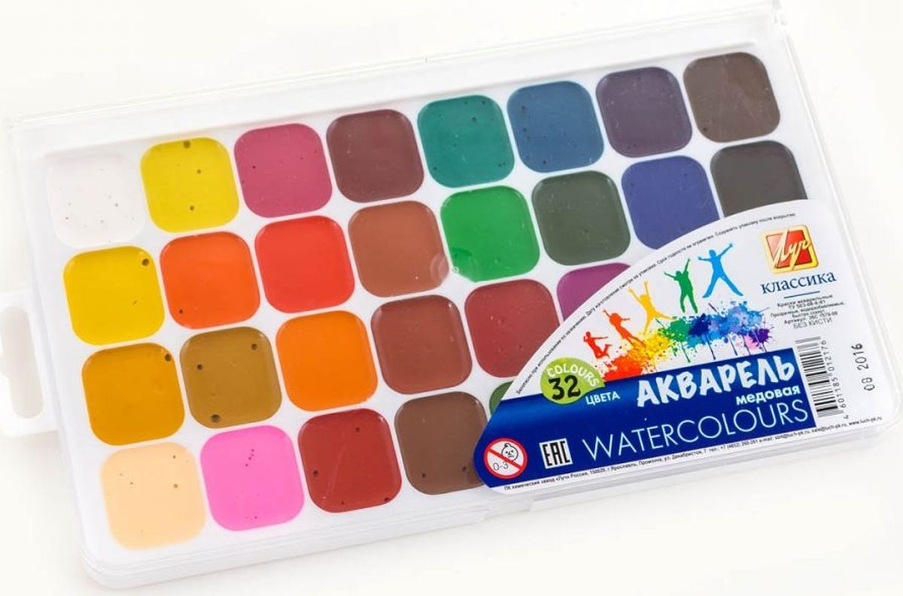
Начнем с такой замечательной краски, как акварель. Эти краски предназначены для того, чтобы рисовать ими на бумаге и только на бумаге. Нужно различать акварель для детского рисования и акварель для написания натюрмортов и пейзажей. Акварель, которая вам нужна, производится в кюветах и тубах. Использовать акварель желательно на мольберте, чтобы не исказить бумагу водянистой структурой краски.
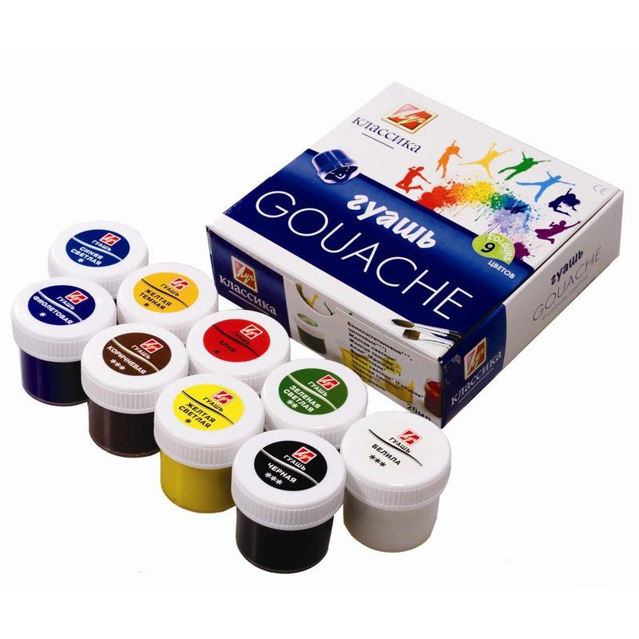
Самой популярной краской можно уверенно назвать гуашь. Особенно ее любят начинающие художники, так как при желании что-то можно смыть и подправить. Картины в итоге получаются матовые. Гуашь выпускается в маленьких баночках. Ее можно использовать на любой поверхности. Единственное замечание: не нужно наносить слишком толстый слой, поскольку когда он высохнет, он может потрескаться.
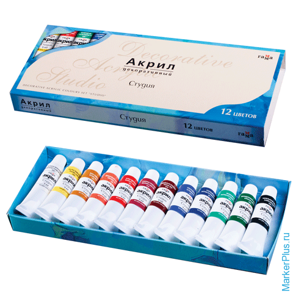
Акрил чаще всего используют профессиональные художники. Их тоже можно применять на разных поверхностях, и это их положительное качество Плохо то, что они не смываются водой. Нет, для “профи” это, может быть, плюс, так как их картины остаются в приличном состоянии долгие годы, но для тех, кто допускает какие-то ошибки, эти краски не подойдут. Акрил производится в специальных тюбиках. Если он густой, его необходимо разбавить водой.
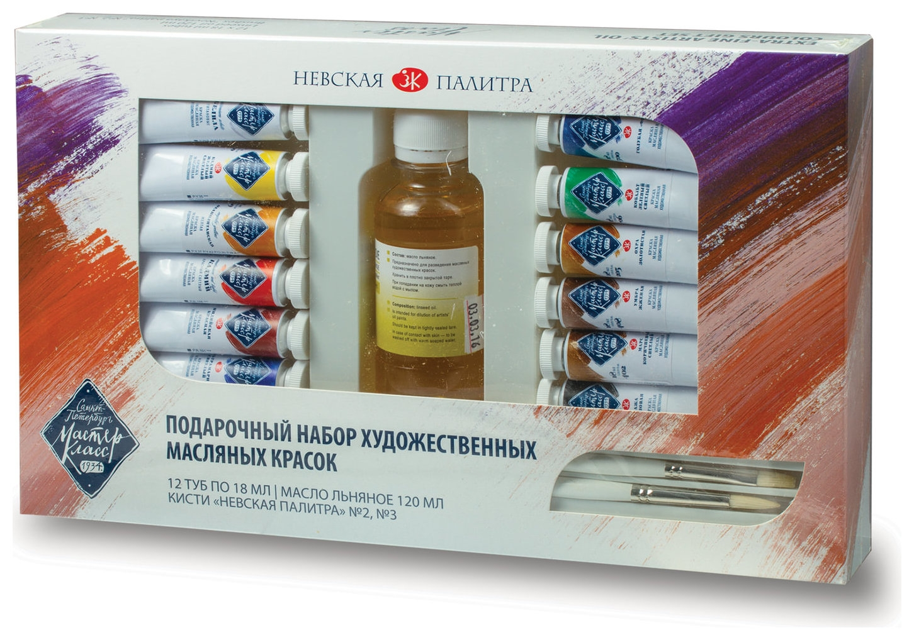
С помощью масляных красок создаются самые красивые и яркие картины. Обычно их наносят на холст, но можно и на загрунтованную бумагу. Произведения, созданные масляными красками, долго сохраняют свой внешний вид, не тускнея. Такие краски выпускаются в отдельных тюбиках, их нужно растворять.
Ластик
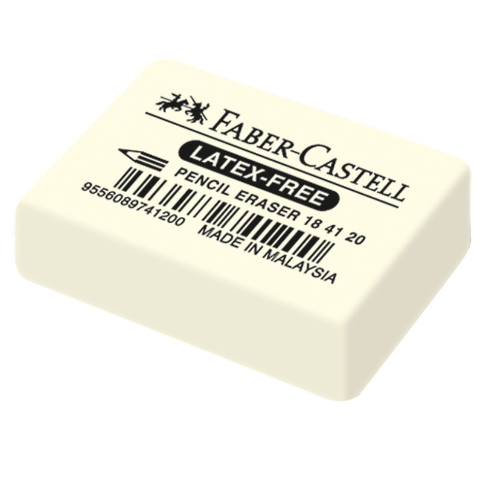
В Европе ластик изобрели в 1770 годах. А уже в 1858 году американец Хайм Липман обнаружил, что очень удобно прикрепить ластик на обратной стороне карандаша.
Позднее изобрели специальные ручки,чернила которых стирается с помощью прикрепленному к ней ластика. А в последние годы так же появились электрические ластики со сменными резинками.
Существует очень много типов ластика. Они бывают разных цветов, разной плотности и форм. Удобнее пользоватся белыми ластиками,так как они не оставляют следы на бумаге.
Холст
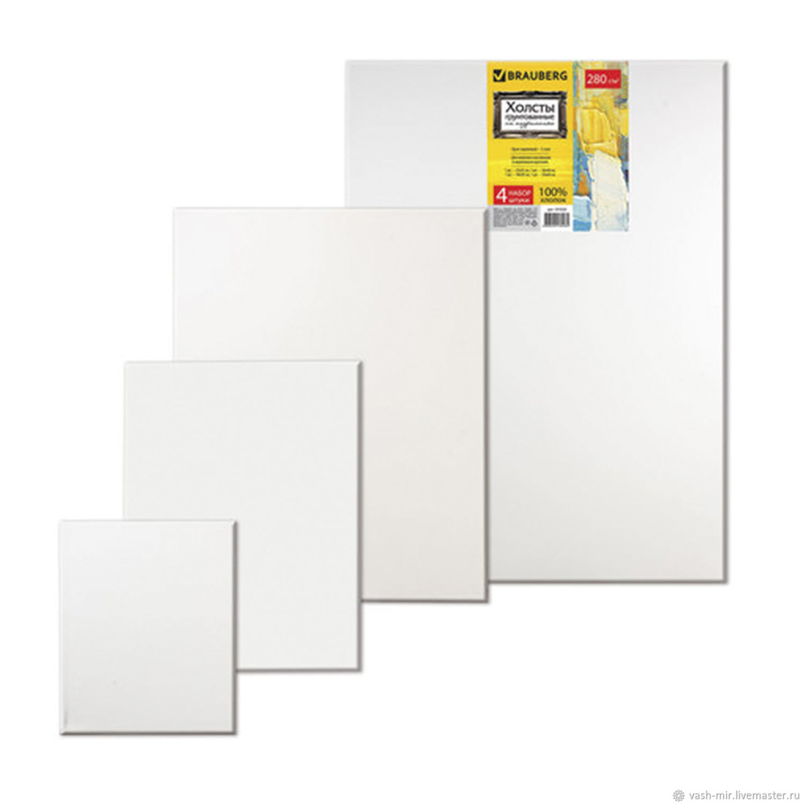
Холст добавляет картине презентабельности, передает новые ощущения, дарит собственную фактуру. Выбрать материал не так просто, учитывая то разнообразие, в котором он представлен в продаже.
Бывают два типа холста: 1 тип грунтовый холст 2 тип на подрамнике холст
Бумага для рисования
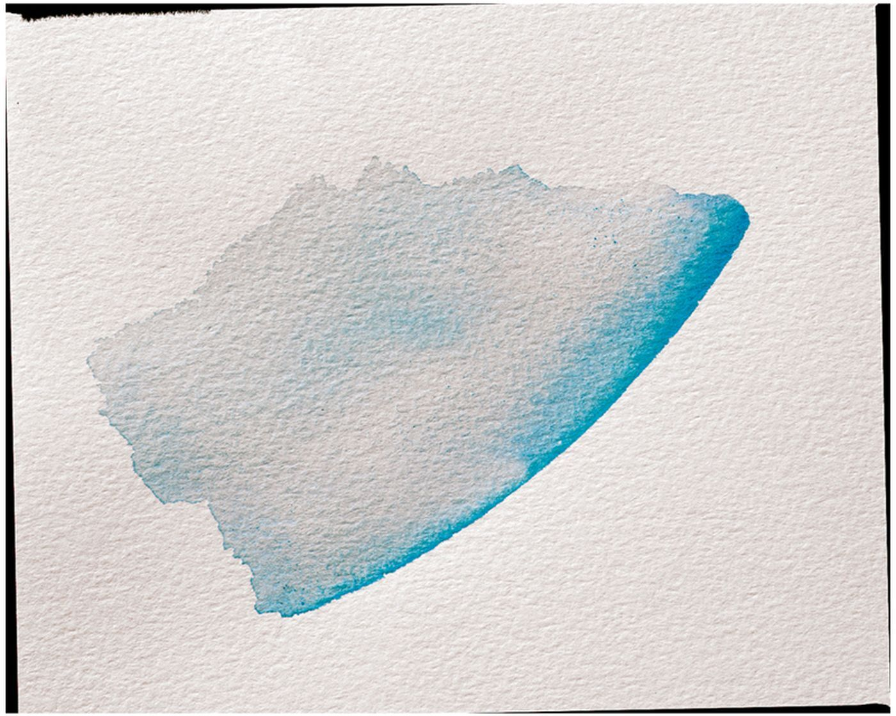
С 14 века бумага для рисования постепенно стала появляться во Франции, Германии и Швейцарии. А вот в Англии хорошую качественную бумагу не выпускали вплоть до 18 века.
Доступность бумаги привела к тому, что в 14-15 веках появилось очень много работ знаменитых художников, таких как Леонардо да Винчи и Микеланджело.